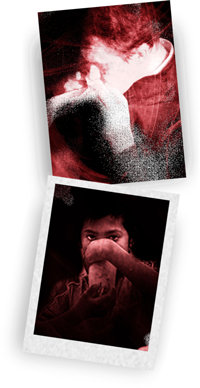

12.5 Read the booklet
Read: Children: The Most Innocent Victims of Crack Cocaine
CHILDREN: THE MOST INNOCENT VICTIMS OF COCAINE

One often hears the statement, “Yes, I take drugs, but that’s my business!” But drug use always has its innocent victims, from those who become prey of addicts seeking through desperate means to finance their drug habit, to those who die in traffic accidents caused by drivers under the influence.
The most tragic victims of cocaine are babies born to mothers who use the drug during pregnancy. In the United States alone, tens of thousands of cocaine-exposed babies are born in a year. Those not addicted often suffer from a variety of physical problems which can include premature birth, low birthweight, stunted growth, birth defects and damage to the brain and nervous system.
Low-birthweight babies are twenty times more likely to die in their first month of life than normal-weight babies, and they face an increased risk of lifelong disabilities such as mental retardation and brain damage.
The impact on society of this human tragedy has yet to be fully measured.